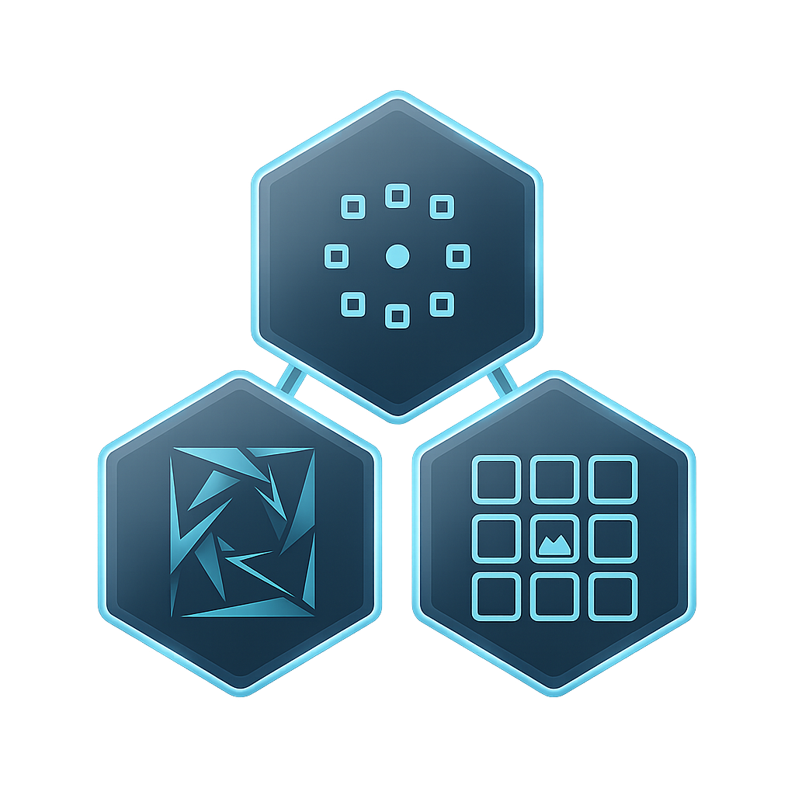

The WAND Protocol
An Open-Source Cognitive Fatigue Research Suite Built on PsychoPy
WAND is an open-source cognitive fatigue research suite that provides adaptive N-back tasks (Sequential, Spatial, Dual) calibrated to individual performance, a Practice Plateau Protocol to eliminate learning effects, and comprehensive Signal Detection Theory metrics (d′, criterion, hit rate) in every CSV output.
No coding required. WAND includes a professional GUI that lets you configure entire experiments visually. Current release: v1.3.0.

🎯 Adaptive Difficulty
Dynamically adjusts task difficulty based on real-time performance to keep each participant in the optimal challenge zone, ensuring sustained cognitive engagement without frustration or disengagement.
📊 Performance Plateauing
Includes a preliminary calibration phase that mitigates task learning effects by ensuring participants reach a stable performance baseline before the main fatigue induction begins.
🔄 Task Variability
Rotates between three complementary non-verbal N-back tasks — Sequential, Spatial, and Dual — to sustain high-effort engagement and counteract monotony-induced passive fatigue.
🧪 Precision Measurement
Full Signal Detection Theory metrics (d′, criterion, hits, false alarms) in all output. Embedded mini-distractors probe inhibitory control under load, providing a pure measure of cognitive decline independent of response bias.
🖥️ GUI Launcher
Multi-page wizard for complete experiment customisation. Includes a visual Block Builder with drag-and-drop interface for experiment design — no scripting required.
🧠 EEG Integration
Built-in EEG trigger support with auto-detection of TriggerBox and parallel port hardware. Run
wand-eeg-test to verify your setup before data collection.
How to Cite
If you use the WAND software in your research, please cite the following publication: